不是又一个练手 Demo，而是一套覆盖真实餐饮经营全流程、可直接落地的生产级系统。
接入 DeepSeek、通义千问、OpenAI、GLM 等大模型，智能点餐、文案生成、经营分析、多轮对话，SSE 流式输出。
骑手抢单、店长派单、GPS 实时追踪，配送费自动入账，不依赖第三方配送平台。
MyBatis-Plus 行级租户自动注入 tenant_id，上下文缺失 fail-closed，一套实例服务多品牌多门店。
管理后台、用户点餐 H5、骑手配送 H5，单 Jar 一并伺服，前端免构建、无需 Node.js。
多渠道支付、货到付款、退款、收银日结、线下收款凭证、发票与提现，资金链路闭环。
原料 BOM、供应商、采购入库、库存盘点流水、成本核算与财务利润分析，毛利一目了然。
等级 / 积分 / 余额 / 优惠券、秒杀、满减、买赠、新客、拼团、推荐拉新，玩法齐全。
行级租户隔离、CSRF、Redis 限流、预编译防注入、XSS 转义、BCrypt、日志脱敏。
点击任意图片可放大查看。管理后台 78 页、用户端 26 页、骑手端 8 页。
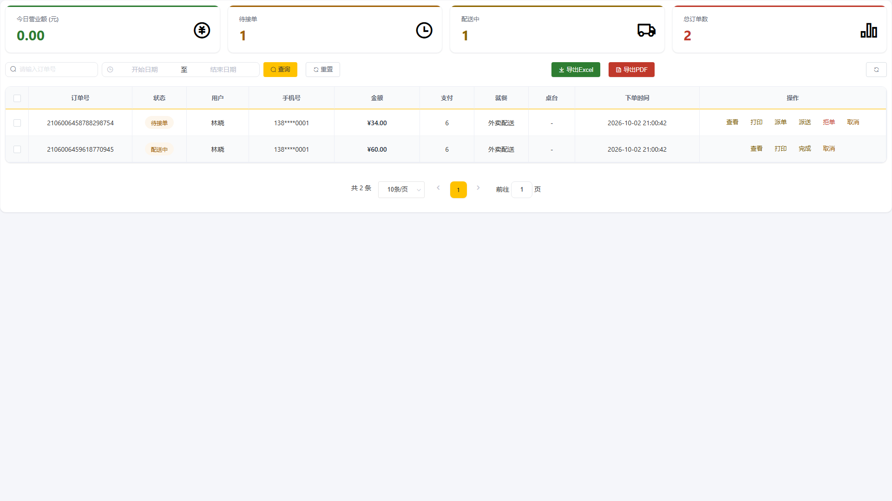
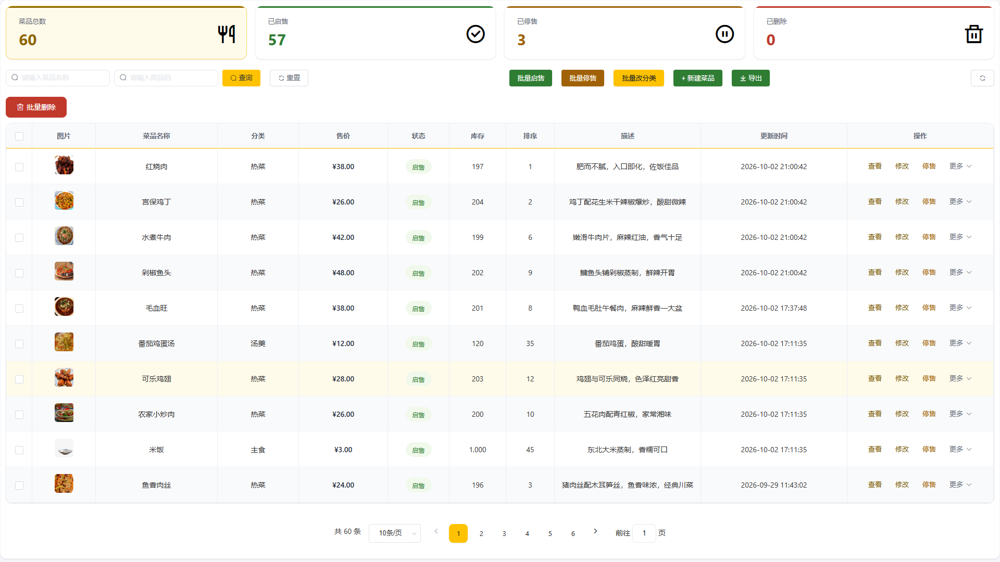
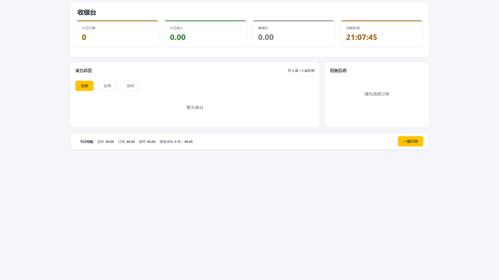
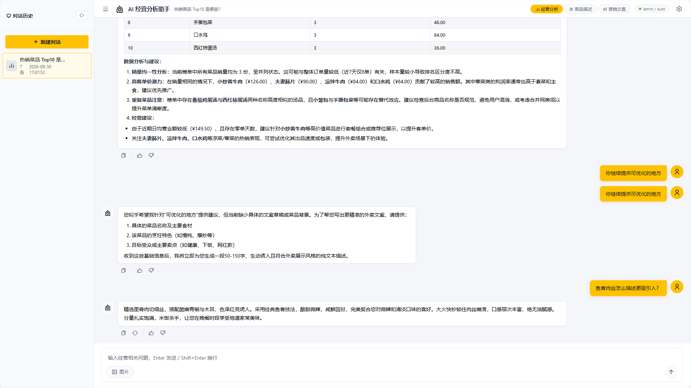
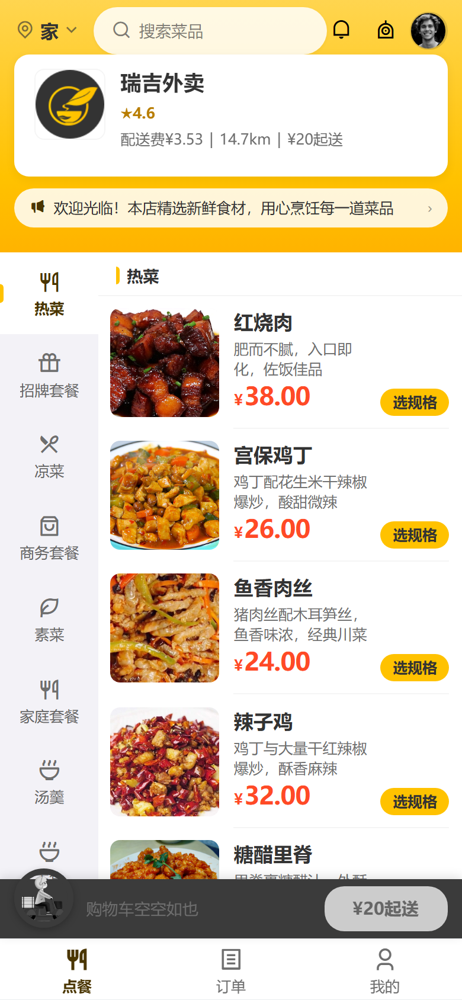
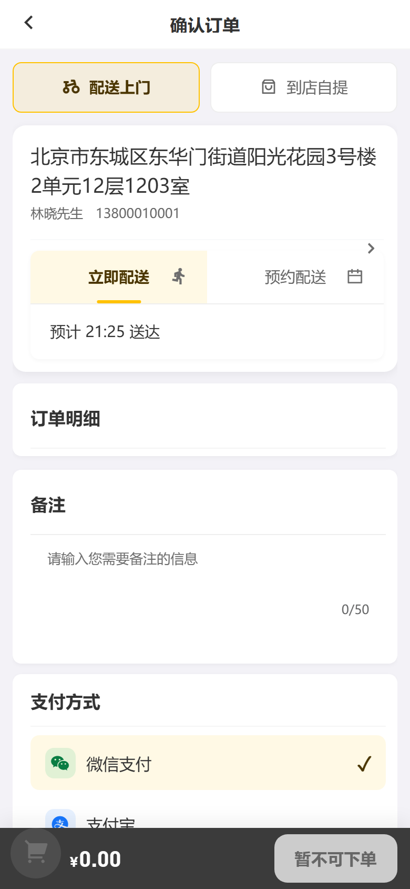
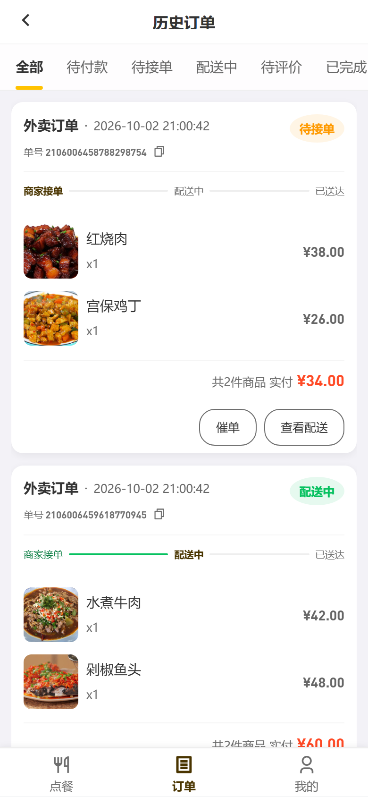
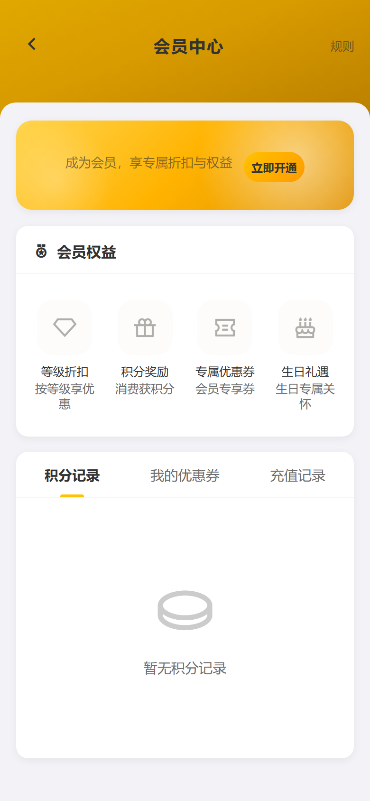
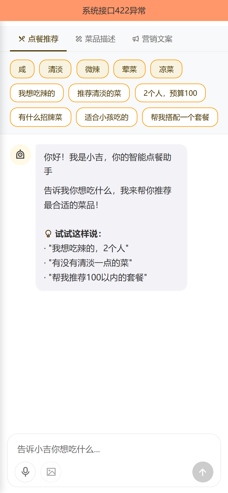
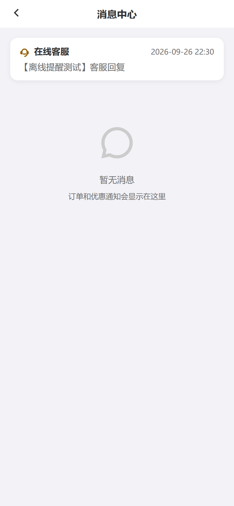
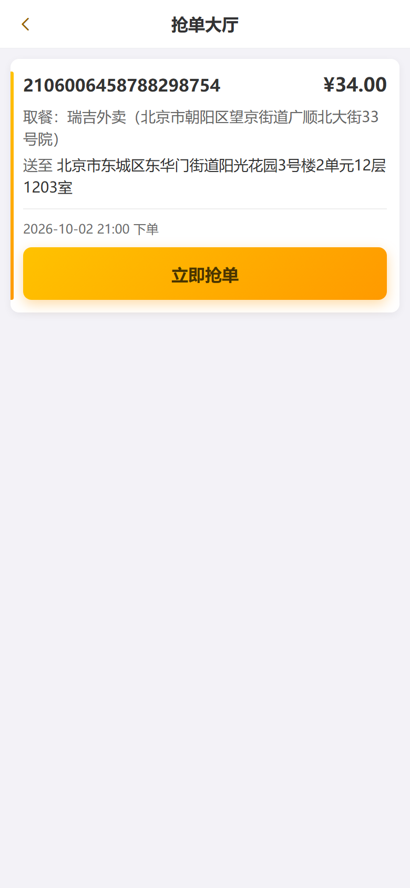
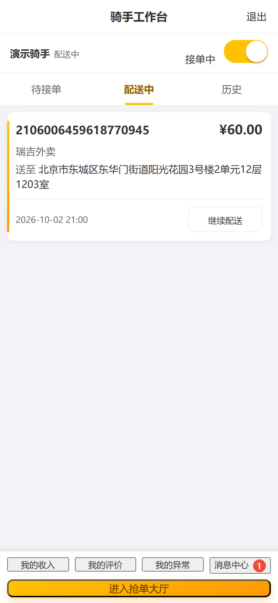
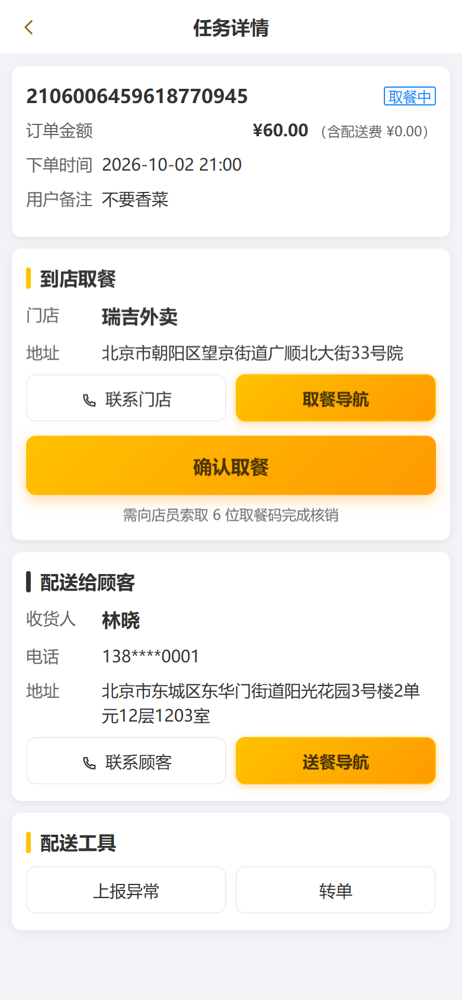
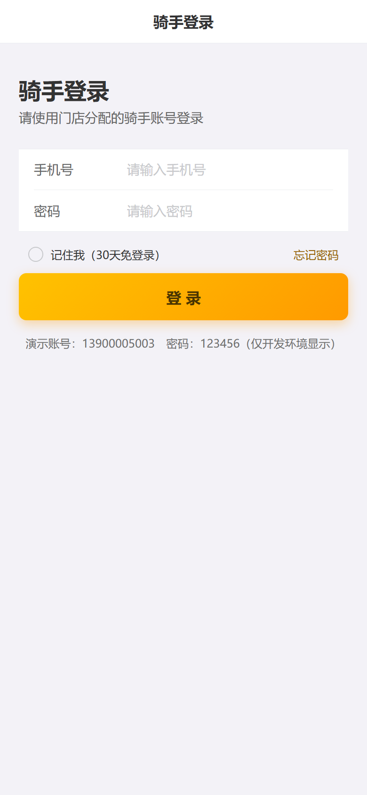
从一笔下单到门店经营决策，39 个模块覆盖餐饮商家的每一个环节。
把生成式 AI 真正接进点餐与经营链路，而不是停留在概念。多供应商故障转移，后台热切换，零配置也能运行。
主流、稳定、资料丰富，既适合二次开发，也适合作为全栈学习范本。
标准 Controller → Service → Mapper 分层，39 个业务模块高内聚低耦合。
仅需 JDK 8、MySQL 8、Redis，前端免构建、无需 Node.js。
JDK 8（必须）、MySQL 8.0、Redis 6+、Maven 3.6+。
创建 utf8mb4 库，导入仓库内 schema*.sql 与最小种子数据。
mvn spring-boot:run，浏览器打开三端地址即可。
# 克隆并进入 git clone https://github.com/itxinfei/reggie.git && cd reggie # 创建数据库（utf8mb4 防中文乱码） mysql -uroot -p -e "CREATE DATABASE IF NOT EXISTS reggie CHARACTER SET utf8mb4;" # 建表（脚本可重复执行） for f in src/test/resources/schema*.sql; do mysql -uroot -p --default-character-set=utf8mb4 reggie < "$f" done # 最小初始化数据（租户 / 门店 / 超管，必执行） mysql -uroot -p --default-character-set=utf8mb4 reggie < db/seed-minimal.sql # 启动 mvn spring-boot:run
管理后台 http://localhost:8080/backend/index.html admin / 123456 用户点餐 http://localhost:8080/front/index.html 手机号验证码登录 骑手端 http://localhost:8080/rider/login.html 接口文档 http://localhost:8080/swagger-ui.html
生产部署：mvn clean package -DskipTests 后以 prod profile 运行，敏感配置支持环境变量与 Jasypt 加密。
--default-character-set=utf8mb4；建库时也要指定字符集。schema*.sql 可重复执行，报「表已存在」属正常。db/seed-minimal.sql，否则 employee 表为空、无可登录账号。